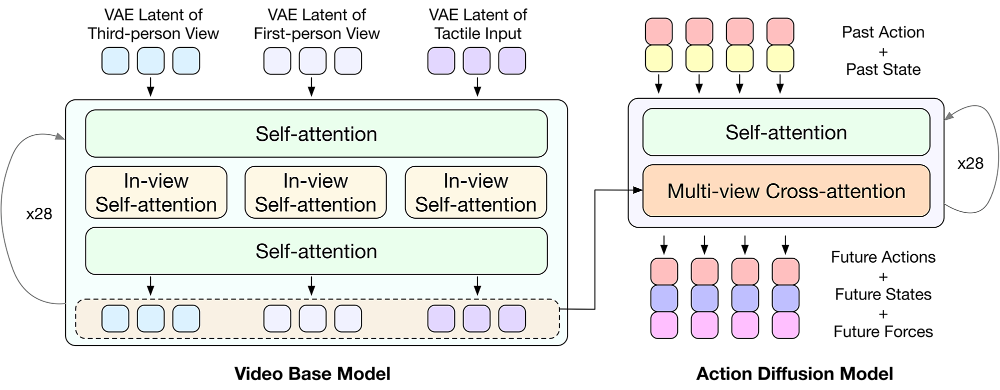
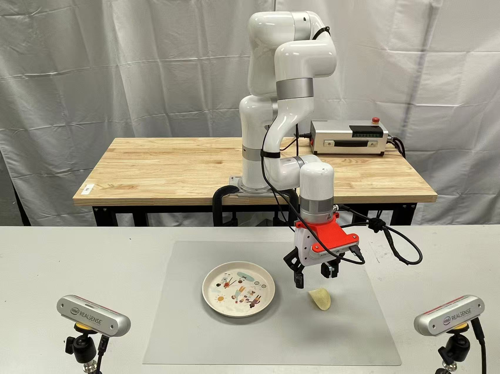
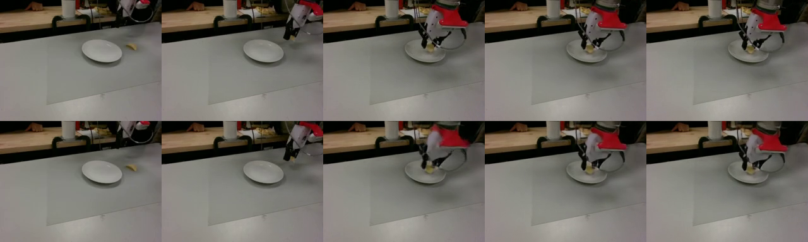
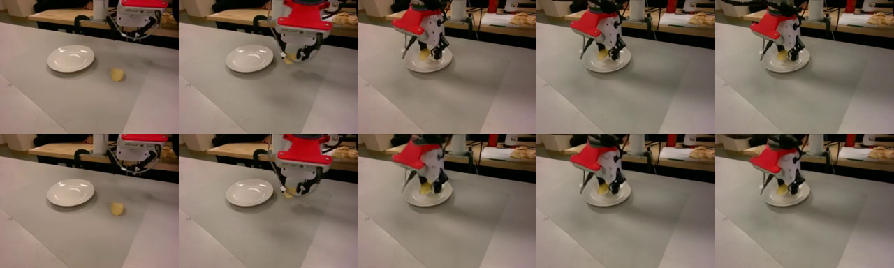
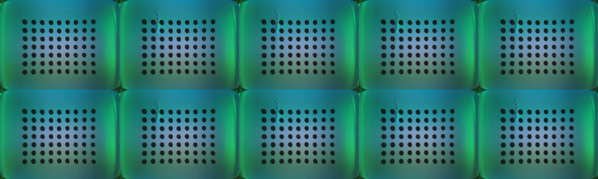

VTAM: Video-Tactile-Action Models for
Complex Physical Interaction Beyond VLAs
Abstract
Video-Action Models (VAMs) have emerged as a promising framework for embodied intelligence, learning implicit world dynamics from raw video streams to produce temporally consistent action predictions. Although such models demonstrate strong performance on long-horizon tasks through visual reasoning, they remain limited in contact-rich scenarios where critical interaction states are only partially observable from vision alone. In particular, fine-grained force modulation and contact transitions are not reliably encoded in visual tokens, leading to unstable or imprecise behaviors. To bridge this gap, we introduce the Video-Tactile Action Model (VTAM), a multimodal world modeling framework that incorporates tactile perception as a complementary grounding signal. VTAM augments a pretrained video transformer with tactile streams via a lightweight modality transfer finetuning, enabling efficient cross-modal representation learning without tactile-language paired data or independent tactile pretraining. To stabilize multimodal fusion, we introduce a tactile regularization loss that enforces balanced cross-modal attention, preventing visual latent dominance in the action model. VTAM demonstrates superior performance in contact-rich manipulation, maintaining a robust success rate of 90% on average. In challenging scenarios such as potato chip pick-and-place requiring high-fidelity force awareness, VTAM outperforms the pi0.5 baseline by 80%. Our findings demonstrate that integrating tactile feedback is essential for correcting visual estimation errors in world action models, providing a scalable approach to physically grounded embodied foundation models.
Method
VTAM uses a two-stage training strategy. In Stage I, the model learns joint visuo-tactile predictive dynamics in latent space using multi-view diffusion over two RGB views and one GelSight stream. In Stage II, the model learns control with conditional diffusion and jointly predicts action, state, and a deformation-derived virtual force proxy. This force proxy preserves tactile sensitivity and stabilizes multimodal optimization.

VTAM architecture: shared visuo-tactile latent world modeling + action-state-force diffusion head.


Real-world setup and teleoperation data collection pipeline.
Results and Analysis
VTAM is evaluated on three contact-rich real-world tasks with 80 total trials per model (20 trials per task setting). It consistently outperforms strong baselines including Genie Envisioner and vision-only pi0.5 variants.
| Model | Chip | Peel | Wipe |
|---|---|---|---|
| Genie Envisioner | 0% | 0% | 2.5% |
| pi0.5 (Vision) | 10% | 0% | 0% |
| pi0.5 + Tactile | 5% | 0% | 0% |
| VTAM (Ours) | 90% | 85% | 95% |
Prediction Visualization



Backbone predictions remain temporally consistent across RGB and tactile streams.
Video Comparisons
Following a Kinema4D-style comparison layout, each card below keeps the same task context while comparing VTAM against baseline models.
Chip Pick-and-Place
Cucumber Peeling
Whiteboard Wiping
Model Behavior Diversity
Success Cases for Baseline Models
BibTeX
@article{vtam2026,
title={VTAM: Video-Tactile-Action Models for Complex Physical Interaction Beyond VLAs},
author={First Author and Second Author},
journal={arXiv preprint},
year={2026}
}